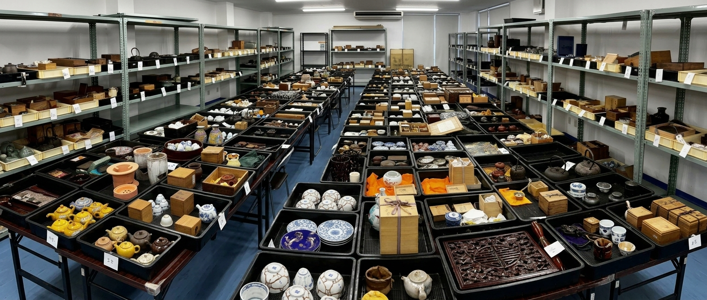

はじめまして。
当オークションでは皆様から商品をご出品いただき、毎月9日（※1月・8月は休会）に古美術品のオークションを開催しております。
出品商品を競売にかけ、最も高値をつけた方が落札するシステムです。その時々の相場金額にて売却でき、なおかつ美術品の価値が公になり、正当な価格で売買できると考えております。
主な取り扱い品目は、お茶道具、煎茶道具、古陶磁器、絵画、版画、古本、掛軸、屏風、中国美術、仏教美術、武具などの古美術品から、有名作家作品まで幅広く取り扱っております。
売却をお考えの美術品がお手元にございましたら、ぜひオークションにご出品・ご参加ください。
